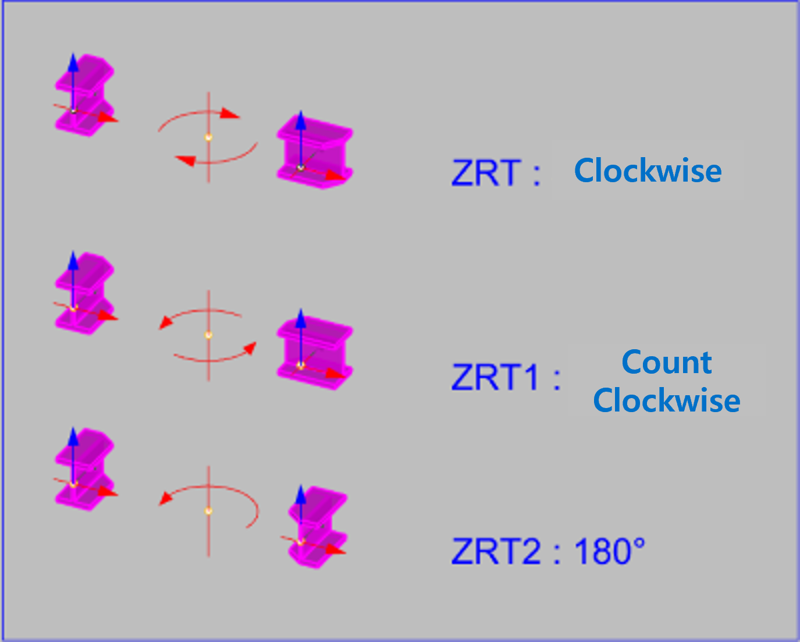

ZRT / ZRT1 / ZRT2
Used to rotate selected objects 90 degrees or 180 degrees aligned to the absolute coordinate Z-axis based on the object center.
Rotates selected objects around the absolute coordinate Z-axis based on the object center. Used identically in AutoCAD / BricsCAD / Rhino, and used to quickly apply -90 degrees (ZRT), +90 degrees (ZRT1), and 180 degrees (ZRT2) rotation.
| Command | Function | Rotation Axis |
|---|---|---|
ZRT | Rotates the object clockwise around the absolute coordinate Z-axis based on the object center. | Z-axis / -90° |
ZRT1 | Rotates the object counter-clockwise around the absolute coordinate Z-axis based on the object center. | Z-axis / +90° |
ZRT2 | Rotates the object 180 degrees around the absolute coordinate Z-axis based on the object center. | Z-axis / 180° |
